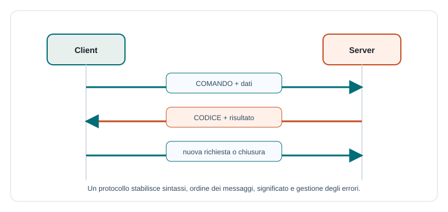

Capitoletto 4
Protocolli applicativi
Un protocollo applicativo stabilisce le regole con cui due programmi si capiscono. Non basta inviare dati: bisogna decidere forma dei messaggi, ordine, significato, errori, stati e versioni.
Obiettivi della lezione
- Definire che cos'è un protocollo applicativo.
- Distinguere sintassi, semantica e temporizzazione.
- Progettare comandi e codici di risposta.
- Riconoscere protocolli stateless e stateful.
- Scrivere una specifica semplice e verificabile.
Che cos'è un protocollo applicativo
Un protocollo applicativo è un insieme di regole usate da programmi per scambiarsi messaggi significativi. TCP o UDP trasportano i dati, ma il protocollo applicativo spiega che cosa quei dati vogliono dire.
Esempi di protocolli applicativi sono HTTP per il web, SMTP per la posta inviata, IMAP per leggere email, DNS per risolvere nomi di dominio. Anche un'applicazione scolastica può definire un protocollo proprio, se client e server rispettano le stesse regole.

Sintassi, semantica e temporizzazione
Per descrivere un protocollo servono tre aspetti. La sintassi dice come sono scritti i messaggi. La semantica dice che cosa significano. La temporizzazione dice quando possono essere inviati e in quale ordine.
| Aspetto | Domanda | Esempio |
|---|---|---|
| Sintassi | Come è fatto il messaggio? | PRENOTA aula data ora |
| Semantica | Che cosa significa? | Richiede una prenotazione. |
| Temporizzazione | Quando si può inviare? | Solo dopo autenticazione. |
Comandi e risposte
Molti protocolli organizzano i messaggi in comandi e risposte. Il client invia un comando con eventuali parametri; il server risponde con un codice, un messaggio e, se serve, dei dati.
Richiesta:
PRENOTA laboratorio-2 2026-04-10 09:00 11:00
Risposta positiva:
200 OK prenotazione-458
Risposta negativa:
409 ERRORE laboratorio già occupatoI codici numerici aiutano i programmi a reagire in modo automatico; il testo descrittivo aiuta gli utenti e gli sviluppatori a capire il problema.
Codici di stato
I codici di stato riassumono l'esito della richiesta. HTTP usa codici molto noti, ma anche un protocollo semplice può adottare categorie simili: successo, errore del client, errore del server.
| Categoria | Significato | Esempio didattico |
|---|---|---|
| 2xx | Operazione riuscita. | 200 OK |
| 4xx | Richiesta non valida o non autorizzata. | 401 NON_AUTORIZZATO, 404 NON_TROVATO |
| 409 | Conflitto con lo stato attuale. | Laboratorio già prenotato. |
| 5xx | Errore del server. | 500 ERRORE_SERVER |
Stato, sessione e autenticazione
Un protocollo può essere stateless o stateful. In un protocollo stateless ogni richiesta contiene le informazioni necessarie. In un protocollo stateful il server mantiene una sessione, per esempio dopo il login.
LOGIN docente password
200 OK sessione=abc123
PRENOTA sessione=abc123 aula=lab2 data=2026-04-10
200 OK prenotazione creataQuando si usa una sessione, bisogna specificare durata, chiusura, permessi e comportamento in caso di token scaduto. Questi dettagli fanno parte della progettazione del protocollo.
Versioni e compatibilità
Un protocollo può cambiare nel tempo. Aggiungere un campo, cambiare un comando o modificare il significato di una risposta può rompere i client esistenti. Per questo è utile indicare una versione.
| Scelta | Perché serve | Esempio |
|---|---|---|
| Versione nel messaggio | Client e server sanno quali regole usare. | TPSIT/1.0 PRENOTA ... |
| Campi opzionali | Permettono evoluzione graduale. | Aggiungere note alla prenotazione. |
| Documentazione | Evita interpretazioni diverse. | Specifica dei comandi accettati. |
Progettare un protocollo semplice
Una buona specifica di protocollo deve essere chiara e verificabile. Chi la legge deve poter implementare un client o un server senza chiedere ogni dettaglio a voce.
- Definisci lo scopo del protocollo.
- Elenca i comandi ammessi.
- Descrivi formato e parametri di ogni comando.
- Definisci le risposte possibili e i codici di errore.
- Indica ordine dei messaggi e stati della sessione.
- Scrivi esempi completi di richiesta e risposta.
Esempio guidato: protocollo per la biblioteca
Supponiamo di progettare un protocollo testuale per cercare libri e registrare prestiti. Ogni messaggio termina con una nuova riga e i parametri sono separati da spazi. Le stringhe lunghe possono essere scritte tra virgolette.
CERCA "reti"
200 OK 3 risultati
PRESTA libro=42 utente=rossi.mario
200 OK prestito=881 scadenza=2026-05-20
PRESTA libro=42 utente=bianchi.luca
409 ERRORE libro non disponibileQuesto esempio mostra sintassi, semantica ed errori. Per completarlo servirebbe anche specificare autenticazione, permessi e formato dettagliato dei risultati.
Errori comuni
- Non documentare i comandi ammessi.
- Usare messaggi ambigui, difficili da interpretare automaticamente.
- Dimenticare codici di errore e casi limite.
- Non indicare dove finisce un messaggio.
- Cambiare il protocollo senza gestire la compatibilità.
Esercizi guidati
- Progetta tre comandi per un protocollo di prenotazione laboratori.
- Scrivi una risposta positiva e una negativa per il comando
CANCELLA_PRENOTAZIONE. - Indica sintassi, semantica e temporizzazione del comando
LOGIN. - Spiega perché conviene documentare una versione del protocollo.
Domande con risposta semplice
TCP è un protocollo applicativo?
No. TCP è un protocollo di trasporto. Un protocollo applicativo, come HTTP, definisce il significato dei messaggi scambiati dalle applicazioni.
Perché servono codici di risposta?
Per permettere al client di capire subito l'esito della richiesta e reagire in modo automatico.
Che cosa deve contenere una specifica di protocollo?
Deve contenere formato dei messaggi, comandi, parametri, risposte, errori, ordine degli scambi, eventuali stati e versioni.
Per ripassare
Un protocollo applicativo è un contratto tra programmi. Per studiarlo chiediti sempre: come sono scritti i messaggi, che cosa significano, in quale ordine si inviano e come vengono gestiti gli errori.